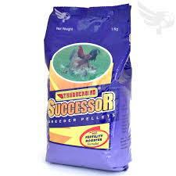

| 🌟 SUCCESOR POULTRY FEEDS 🌟 |
|  |
SUCCESOR 💰 Price: ₱50 per kilo 📌 Description: SUCCESOR is a high-performance poultry feed designed to optimize growth, improve feather quality, and strengthen immunity. Perfect for broilers and native chickens aiming for healthy development. ✅ Key Benefits: - Promotes rapid growth and healthy weight - Enhances stamina and energy - Improves feather quality and overall health - Boosts immunity - Suitable for everyday feeding 🐔 Best For: Broilers, native chickens, and mixed poultry 🕒 Feeding Guide: Feed daily with clean water. Adjust portions based on age and size of birds. |